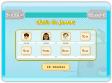
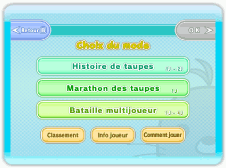
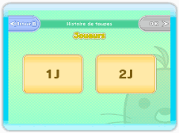
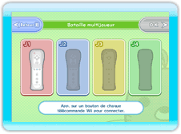

Commencer une partie
Appuyez sur  à l'écran-titre pour aller à l'écran de choix du joueur. Si vous jouez pour la première fois, vous commencerez par voir un rapide didacticiel.
à l'écran-titre pour aller à l'écran de choix du joueur. Si vous jouez pour la première fois, vous commencerez par voir un rapide didacticiel.

Écran de choix du joueur
Sélectionnez ici les caractéristiques de votre joueur avant de passer à l'écran de choix du mode. Pour créer un joueur, sélectionnez un emplacement "Nouveau" et choisissez un Mii™.

Écran de choix du mode
Sélectionnez un mode de jeu.
Histoire de taupes (1 à 2 joueurs)
Écrabouillez les différentes taupes qui apparaissent dans chaque niveau. Deux joueurs peuvent faire équipe ici.
Marathon des taupes (1 joueur)
Dans ce mode prévu pour un joueur, faites un bon score en ratant le moins de taupes possible. Plus vous progresserez dans les niveaux et plus les taupes seront nombreuses, ce qui vous compliquera la tâche.
Bataille multijoueur (1 à 4 joueurs)
Un maximum de quatre joueurs peuvent s'affronter dans ce mode. Écrasez le nombre de taupes exigé avant les autres, ou les taupes colorées pour essayer d'avoir une main gagnante.
Classement
Vous trouverez ici le classement des scores, à la fois sur votre console Wii et dans le pays tout entier.
Info joueur
Vous trouverez ici vos statistiques et les titres que vous avez remportés.
Comment jouer
Affiche le didacticiel qui vous est montré lorsque vous jouez pour la première fois.
Écran des paramètres
Une fois le mode sélectionné, cet écran vous permettra de paramétrer le jeu. Les options disponibles dépendent du mode choisi.


1. Nombre de joueurs
Pour sélectionnez le nombre de joueurs, connectez les Wii Remotes nécessaires et validez avec le bouton "OK". Si vous êtes moins de quatre joueurs en mode Bataille multijoueur, vous pourrez choisir le nombre de joueurs contrôlés par l'ordinateur.
2. Choix d'un Mii
Sélectionnez le Mii avec lequel vous souhaitez sauvegarder votre partie. Vous ne pouvez pas sauvegarder votre progression avec un Mii invité.
3. Choix du niveau et des règles
Sélectionnez le niveau et les règles de votre choix. Les options disponibles dépendent du mode choisi. Pour plus d'informations, reportez-vous aux instructions de chaque mode.
4. Validez vos choix
Un récapitulatif de vos choix apparaîtra à l'écran. Commencez à jouer avec le bouton "Commencer" ou modifiez un choix avec le bouton "Retour", qui vous ramènera à l'écran précédent.